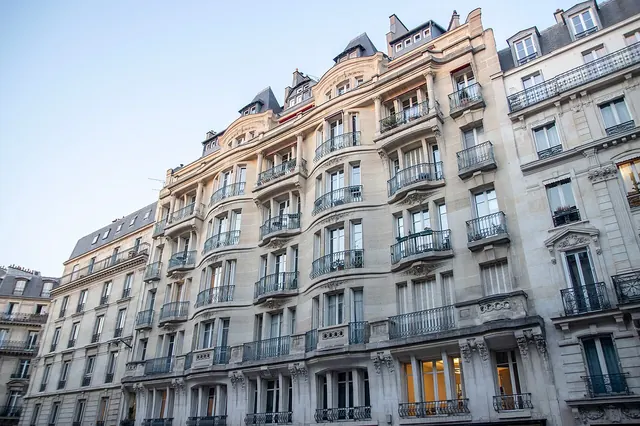

Gestion administrative
Tenue des assemblées générales, envoi des convocations, rédaction des procès-verbaux et application des décisions.
MALAHIEUDE SYNDIC est un syndic de copropriété indépendant, fondé et dirigé par Johann MALAHIEUDE, qui a débuté sa carrière dans le monde de la copropriété en 2007. MALAHIEUDE SYNDIC prône une gestion de proximité, transparente et réactive.

Tenue des assemblées générales, envoi des convocations, rédaction des procès-verbaux et application des décisions.
Élaboration et suivi des budgets, appels de fonds, règlement des fournisseurs, gestion des impayés.
Consultation des entreprises, coordination et suivi des interventions.
Suivi des dossiers : de la déclaration au versement de l'indemnité.
Échanges réguliers, réunions de travail : une relation fondée sur la confiance, la transparence et la complémentarité.
Une attention constante portée aux évolutions législatives et réglementaires.
Vous n'êtes plus satisfait de la gestion de votre copropriété ? Étudions ensemble la situation et nous vous présenterons une offre adaptée à votre immeuble.
Demander une proposition« Je suis scrupuleux observateur de mes promesses. »
MONTAIGNE, Essais
Nous découvrons votre immeuble, son fonctionnement et vos attentes.
Budget, contrats, travaux et sujets prioritaires : nous faisons le point.
Nous vous présentons une offre claire et cohérente avec votre copropriété.
Nous vous accompagnons dans chacune des étapes : de la première visite de votre copropriété, à la présentation de notre offre en assemblée générale.
Johann MALAHIEUDE, formé aux métiers de l'administration de biens, a construit une solide expérience au sein d'un grand groupe immobilier, jusqu'à diriger un service copropriété. Début 2022, il prend la direction d'une agence familiale parisienne. Pendant toute sa carrière, il a accompagné des copropriétés sur des projets aussi variés qu'exigeants.
En 2026, il choisit de mettre son expérience au service d'un projet entrepreneurial indépendant : MALAHIEUDE SYNDIC.
L'approche repose sur quatre convictions
Une relation de confiance se construit avant tout par les actes.
MALAHIEUDE SYNDIC intervient dans Paris intra-muros, terrain de jeu qu'il connaît très bien. MALAHIEUDE SYNDIC peut intervenir également sur les villes de la première couronne.
MALAHIEUDE SYNDIC peut accompagner des copropriétés lilloises, ainsi qu'en Bretagne, sur la côte d'Émeraude (triangle Dinan / Dinard / Saint-Malo).
Le changement de syndic est voté en assemblée générale : une proposition de contrat de mandat de syndic doit obligatoirement être jointe à l'ordre du jour. Les copropriétaires peuvent mettre plusieurs syndics en concurrence et adresser les projets de contrat par lettre recommandée avec accusé de réception pour qu'ils soient soumis au vote. Une fois le syndic désigné, la passation des dossiers entre le syndic sortant et le syndic élu s'effectue dans des délais réglementaires.
Oui, MALAHIEUDE SYNDIC accompagne les copropriétés de toutes tailles, y compris les petits immeubles. Chaque proposition est établie en fonction des caractéristiques de l'immeuble.
Contactez MALAHIEUDE SYNDIC par e-mail à contact@malahieude.fr, par téléphone au 06 68 54 84 14 ou en cliquant sur le bouton « Écrire au cabinet ».
Une autre question ? Écrivez à contact@malahieude.fr ou appelez le 06 68 54 84 14.
Vous envisagez de changer de syndic et souhaitez faire appel à nos services ? Présentez-nous votre copropriété et échangeons.
Pour une proposition adaptée, précisez simplement